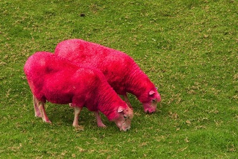

<% @eventhome = @page.directory.split(File::SEPARATOR)[0..1].join(File::SEPARATOR) %>
<center>
  <table><tr><td>
  
  <small><a href='http://www.flickr.com/photos/ryantaylorphotography/6782155243/'>http://www.flickr.com/photos/ryantaylorphotography/6782155243/</a></small>
</td><td>
  Date : <b>8 March 2013</b><br>Location: <a href="location">Auckland</a>
  <br><br>
  <a href="registration">Registration</a> still open!<br>
  <a href="propose">Call for proposals</a> closed.
</td>
</tr>
</table>
</center>
<hr>

If you want to be the first to get news [subscribe to the devopsdays mailinglist](http://groups.google.com/group/devopsdays)
